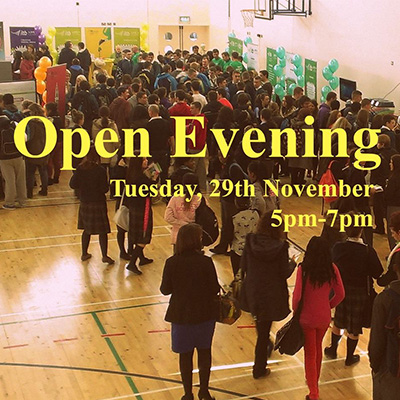
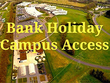
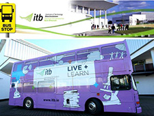

SHUTTLE BUS FEEDBACK : Should we alter our morning shuttle bus times (departing Coolmine Train station ) so they better match the train timetable ? CHOOSE ANY ONE OPTION BELOW : 1) Shuttle Bus departs 08.35 (better suits train arriving from City scheduled 08.27)
Please note there'll be no access to campus buildings from close of business today Fri 28th Oct till morning Tues 1st Nov. For Library Opening times during Reading Week, Our Restaurant will operate a limited service during Reading / Revision Week and will close at 2pm.
We now have details of your Graduation Day.